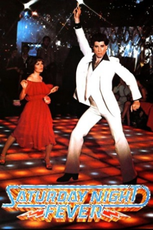

Country:United States, 122 minutes
Spoken languages:English
Genres:Music, Drama
Director(s):John Badham
Writer(s):Norman Wexler
Video Codec:Unknown
Number: 2288


Certification:
Storyline:
Tony spends his Saturdays at a disco where his stylish moves raise his popularity among the patrons. But his life outside the disco is not easy and things change when he gets attracted to Stephanie.
Cast:
Medium: Original DVD,
Loaned: No
Aspect ratio: Unknown